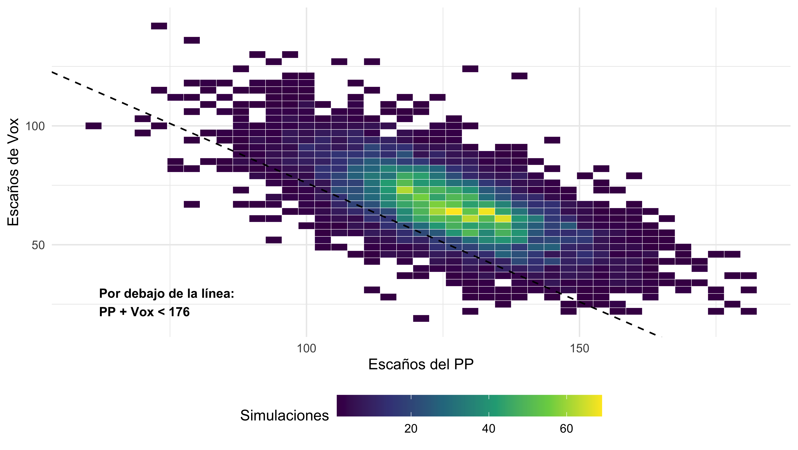

| Partido |
Voto latente
|
Con el error del consenso
|
||
|---|---|---|---|---|
| Mediana (%) | IC90 (%) | Mediana (%) | IC90 (%) | |
| PP | 31,4 | 30,4–32,4 | 30,7 | 26,0–35,6 |
| PSOE | 28,8 | 27,7–30,0 | 29,3 | 24,8–33,8 |
| Vox | 18,5 | 17,3–19,6 | 18,2 | 13,7–23,4 |
| Frente Amplio | 6,5 | 5,8–7,1 | 6,8 | 5,1–8,7 |
| ERC | 2,4 | 2,2–2,8 | 2,4 | 2,1–2,8 |
| SALF | 1,6 | 1,3–2,1 | 1,6 | 1,3–2,1 |
| EH Bildu | 1,4 | 1,2–1,6 | 1,4 | 1,2–1,6 |
| Junts | 1,3 | 1,2–1,5 | 1,3 | 1,1–1,6 |
| Podemos | 1,3 | 1,0–1,6 | 1,3 | 0,9–1,9 |
| BNG | 0,9 | 0,8–1,1 | 0,9 | 0,8–1,1 |
| PNV | 0,9 | 0,7–1,0 | 0,9 | 0,7–1,0 |
| CC | 0,4 | 0,3–0,5 | 0,4 | 0,3–0,5 |
| UPN | 0,1 | 0,1–0,1 | 0,1 | 0,1–0,1 |
| Resto | 4,3 | 3,3–5,6 | 4,3 | 3,3–5,6 |
Generales 2026: el pronóstico vivo del 29-N
R
2026
encuestas electorales
análisis bayesiano
Estado vivo del modelo bayesiano conjunto: tendencia del voto, escaños y probabilidad de mayoría. Se actualiza con cada encuesta nueva.
Actualización del 23 de noviembre de 2026, con encuestas hasta el 22 de noviembre de 2026.
Esto es un meta-análisis de encuestas que hago por diversión. No trabajo para ningún medio ni tengo que acertar. Hay gente que hace cosas parecidas, y muy bien: Kiko Llaneras en El País, ciento76 u objetivo176. De sus tablas salen buena parte de las encuestas que uso.
Lo mío va por otro lado: todo es bayesiano. Las encuestas, el sesgo de cada casa y lo que fallan todas a la vez van en un solo modelo. Ese error común no lo pongo a ojo: lo estima el modelo con las elecciones pasadas. Y esa incertidumbre llega hasta cada escaño, simulación a simulación. Por eso las horquillas salen anchas.
En Generales 2026, todo bayesiano (I): el voto puedes ver como lo hice.
Esta página es el estado vivo de ese modelo, que normalmente actualizaré de vez en cuando, conforme vea que van saliendo encuests. El post técnico quedó congelado Con cada encuesta nueva se reajusta el modelo y se vuelve a renderizar esta página. Las fechas de la actualización están en el recuadro de arriba y se repiten al pie de cada gráfico.
El voto el 29-N
El modelo da dos cifras de voto para el 29-N. El voto latente es la media de las casas encuestadoras, llevada hasta el día de la votación, dice qué cuentan las encuestas.
El voto con el error del consenso le suma lo que todas las casas pueden fallar a la vez, estimado con las elecciones pasadas. Los escaños y el voto provincial salen de este segundo. La mediana apenas cambia, pero el intervalo se abre: el IC90 del PP mide 2,0 puntos sin el error y 9,6 con él.
Tendencia

Escaños
Los escaños salen del escenario mapa: el voto nacional se reparte por provincias y, antes del D’Hondt, se aplican las candidaturas que de verdad se presentan en cada una. Las encuestas preguntan por partidos nacionales, pero a la izquierda del PSOE las listas cambian según el territorio:
- Podemos no se presenta en Barcelona, Girona, Lleida y Tarragona, por su acuerdo con ERC. Su voto se reparte en cada simulación con un sorteo centrado en 65 % para ERC, 30 % para el Frente Amplio y 5 % fuera (abstención u otros).
- El Frente Amplio no se presenta en Teruel: CHA-Frente Amplio retiró su lista el 21 de octubre. Su voto va a un sorteo centrado en 55 % para el PSOE y 45 % fuera.
- Adelante Andalucía se presenta sola en las 8 provincias andaluzas. La mayoría de encuestas nacionales no la miden; las que sí la miden le dan en torno al 1,5 % nacional, que con AA solo en Andalucía equivale a un 7,8 % andaluz: su voto sale de ahí, con incertidumbre en logit, y su reparto entre provincias, de las autonómicas del 17 de mayo de 2026. El centro ha cambiado con las fuentes: fue el 9,62 % de esas autonómicas hasta el 11 de noviembre y el 3,4 % del MRP con varias encuestas hasta el 15. Ese voto sale primero de “otros partidos” y después de Podemos y el Frente Amplio, cada uno en proporción a su voto en la provincia.
La cifra de cada partido es su media de escaños en las simulaciones, redondeada por mayores restos para que entre todos sumen 350. Las medianas, redondeadas cada una por su lado, no tienen por qué sumarlos.


| Partido | Media (suma 350) | Mediana | q05 | q95 |
|---|---|---|---|---|
| PP | 127 | 126 | 104 | 150 |
| PSOE | 118 | 118 | 97 | 140 |
| Vox | 62 | 61 | 40 | 86 |
| ERC | 11 | 11 | 9 | 13 |
| Frente Amplio | 10 | 10 | 6 | 16 |
| EH Bildu | 7 | 7 | 6 | 9 |
| Junts | 5 | 5 | 3 | 7 |
| PNV | 4 | 4 | 3 | 6 |
| Adelante Andalucía | 3 | 3 | 1 | 4 |
| BNG | 2 | 2 | 2 | 4 |
| CC | 1 | 1 | 0 | 1 |
| Podemos | 0 | 0 | 0 | 0 |
| SALF | 0 | 0 | 0 | 0 |
| Mayoría | Probabilidad |
|---|---|
| PP solo >= 176 | 0,1% |
| PP + VOX >= 176 | 87,7% |
| izquierda >= 176 | 10,7% |
¿Qué mayoría sale en cada simulación? Cada barra cuenta simulaciones según la ventaja en votos de PP + Vox sobre PSOE + Frente Amplio + Podemos, y el color dice qué mayoría sale en escaños en esa simulación. Las categorías no se solapan y se asignan en este orden: PP solo; PP sin Vox (PP, UPN, PNV y CC); PP y Vox; aliados de 2023 sin Junts (PSOE, FA, Podemos, AA, ERC, EH Bildu, PNV, BNG y CC); en el aire, cuando los aliados solo llegan con Junts; y ninguna, cuando ningún bloque suma 176.
El gráfico no es idea mía: copio el estilo del que publica Kiko Llaneras en El País para su modelo de las generales, con la ventaja en votos en el eje y cada simulación coloreada según la mayoría que sale. Al César lo que es del César. Los datos y las categorías son los de mi modelo.

Cuando las encuestas fallan con el PP, suelen fallar al revés con Vox. En las simulaciones en las que el PP saca más escaños, Vox suele sacar menos: la correlación entre sus escaños es de -0,66. Ojo, eso no quiere decir que PP y Vox se peleen por los mismos votantes. Sale sobre todo del error del consenso: en las elecciones pasadas, cuando las encuestas se pasaban con el PP se quedaban cortas con Vox, y al revés. El modelo lo aprende como una correlación de -0,50 entre los dos fallos (lo cuento en el post del modelo). Las encuestas se equivocan al repartir el voto entre los dos, y aciertan más con la suma.
Por eso la suma se mueve menos que cada partido por separado: su desviación típica es de 12 escaños, frente a los 20 que tendría si los escaños de los dos no estuvieran correlacionados. Y la mayoría de PP y Vox depende sobre todo de cuánto suman, no de cómo se lo repartan.

Provincia a provincia
El modelo no tiene encuestas provinciales, pero sí tiene el voto nacional con el error del consenso y un patrón provincial: el del 23-J, ajustado con el shock de los regionales (ver el post donde cuento todo eso) y las reglas del mapa de listas. Con eso reparte el voto draw a draw entre las 52 provincias, y de ahí sale el D’Hondt. Las tres tablas miran esa distribución provincial: primero el voto, luego los escaños, y al final el escaño más reñido de cada provincia.
El voto. Mediana, en %, del voto (con el error del consenso) que cada familia recibe en cada provincia. Con el filtro se busca la que quieras; conviene leerlo como “a dónde va el voto”, no como encuesta provincial.
Los escaños. D’Hondt sobre el voto anterior, draw a draw, con el umbral legal del 3 % provincial. Para cada provincia y partido con opciones, los escaños en las 6.000 simulaciones. La media son los escaños esperados, y suma los de la provincia. La mediana y el IC90 son escaños enteros. La nota de debajo de la tabla explica por qué las medianas a veces no cuadran.
NotaPor qué las medianas no siempre suman los escaños
La mediana es el valor del medio de las 6.000 simulaciones, y se calcula para cada partido por separado. Por eso las medianas de varios partidos no tienen por qué sumar los escaños de la provincia. La media sí los suma: en cada simulación los escaños suman el total, y la media conserva esa suma.
Pasa cuando un escaño está muy disputado: ahora mismo, en 13 de las 52 provincias. Ejemplo: Ceuta reparte 1 escaño, pero sus medianas suman 0. Las medias de los partidos con más opciones son PP 0,5, Vox 0,3, PSOE 0,2.
Por eso la tabla se ordena por la media. La mediana y el IC90 dicen otra cosa: qué número entero de escaños es el típico para cada partido.
El escaño más reñido de cada provincia. El D’Hondt reparte los escaños uno a uno: cada escaño va al cociente más alto, que es el voto del partido dividido por los escaños que ya lleva conseguidos, más uno. El último escaño en caer es el más ajustado de la provincia. Con 6.000 simulaciones completas se puede mirar, en cada una, quién se queda ese escaño y qué partido se quedó más cerca de quitárselo; la tabla resume las combinaciones que aparecen en cada provincia y con qué frecuencia.
Cómo se lee. Gana la provincia es el partido con más escaños en ella; si dos empatan, el más votado. Un par como Vox-PP dice que el escaño más reñido acaba en manos de Vox y que el partido que más cerca estuvo de arrebatárselo fue el PP; el % de simulaciones dice cuántas veces ocurre eso. Dentro de una misma provincia, fíjate en si el que se lo lleva se repite en casi todas las filas o va alternando entre partidos. Cuando se repite, la provincia está sentenciada: en Melilla, PP se lleva el escaño más reñido en el 95 % de las simulaciones, sea cual sea el rival. Cuando alterna, ese escaño está en el aire, y es justo donde un pequeño movimiento de voto cambia el color de un escaño. El buscador de la tabla sirve para localizarlas: escribe un par concreto (por ejemplo, Vox-PP) y verás en qué provincias ese escaño está al alcance de los dos.
La última columna, Par con el voto mediano, es la cuenta que harías a mano: el D’Hondt sobre la mediana del voto de la tabla de arriba. Es un solo escenario y no tiene por qué coincidir con el par más frecuente. En Córdoba, con el voto mediano el par es PP-Vox, pero en las simulaciones el más frecuente es PP-PSOE (25,9 % de las simulaciones). El voto provincial simulado se mueve varios puntos de una simulación a otra, y con cocientes tan cercanos basta eso para cambiar quién se lleva el último escaño y quién se queda a las puertas.
Podemos ver la probabilidad de que cada partido se lleve el escaño más reñido de cada provincia, sumados todos los pares posibles, en %. El resto de partidos va en la última columna, cada uno con su nombre y su %. Las provincias van de más abierta a más sentenciada: arriba, escaños que nadie controla; abajo, favoritos claros.
Un ejemplo de provincia en juego, Granada: en 61 % de las simulaciones la gana PP, pero el escaño más reñido no está nada sentenciado: en el 22,4 % de las simulaciones se lo lleva PP con PSOE a las puertas, en el 21,4 % se lo lleva PSOE contra PP, y así hasta media docena de combinaciones distintas. Ese es el escaño que decidiría quién gana Granada si el voto se moviera un poco.
Las encuestas que entran
Las 56 encuestas de 2026 con los grandes partidos son la primera tabla, ordenadas por fecha. El modelo descarta las que no publican tamaño muestral, las del CIS, las de ElectoPanel, que es un panel continuo y solo entra en el reparto del bloque, y las entregas que repiten entrevistas de otras (lo explico más abajo). La columna Regionales marca las que entran también con el desglose de los partidos regionales, que se rellena con el scraping de objetivo176 (con los arreglos curados a mano por encima). Debajo, las encuestas que no publican SALF (Sigma Dos, Winston, Ateneo del Dato, Data10). Todas separan Sumar y Podemos; lo que les falta es SALF, que es un partido de derechas. Sin SALF no se cierra el reparto de los siete partidos, así que entran con menos celdas: PP, PSOE, VOX, Sumar + Podemos y un resto con SALF, los regionales y otros. Algunas (Sigma Dos, Data10) también arrastran el desglose del bloque desde objetivo176.
Entregas que se solapan. Algunas casas publican estimaciones acumuladas: cada entrega suma entrevistas nuevas a las de las entregas anteriores. SW Demoscopia hace un tracking diario para La Séptima desde el 26 de octubre, y cada informe junta todas las jornadas desde ese día. SocioMétrica, para El Español, publicó el 25 de octubre y el 1 de noviembre dos estimaciones con campo “desde el 1 de septiembre”. Por su tamaño parecen juntar sus oleadas sueltas de septiembre y octubre: 1.200 + 1.000 + 1.000 = 3.200, frente a las 3.223 entrevistas de la del 25 de octubre.
Si las metiera todas, el modelo contaría a la misma persona dos o tres veces y creería que esa casa tiene mucha más muestra de la que tiene. Así que de estas casas solo entran entregas cuyos campos no se solapan. Cuando se solapan, me quedo con la más reciente, que es la que tiene más entrevistas. Así cada entrevistado cuenta una sola vez.
| Casa | Trabajo de campo | n | ¿Entra? |
|---|---|---|---|
| 40dB | 31 ago–2 sep 26 | 2.000 | Sí |
| 40dB | 25–28 sep 26 | 2.000 | Sí |
| 40dB | 7–8 oct 26 | 800 | Sí |
| 40dB | 2–4 nov 26 | 2.000 | Sí |
| 40dB | 10–12 nov 26 | 1.000 | No: se solapa con una posterior |
| 40dB | 10–13 nov 26 | 1.500 | No: se solapa con una posterior |
| 40dB | 10–14 nov 26 | 2.000 | No: se solapa con una posterior |
| 40dB | 10–15 nov 26 | 2.500 | No: se solapa con una posterior |
| 40dB | 12–16 nov 26 | 2.000 | No: se solapa con una posterior |
| 40dB | 13–17 nov 26 | 2.000 | No: se solapa con una posterior |
| 40dB | 14–18 nov 26 | 2.000 | No: se solapa con una posterior |
| 40dB | 15–19 nov 26 | 2.000 | No: se solapa con una posterior |
| 40dB | 16–20 nov 26 | 2.000 | No: se solapa con una posterior |
| 40dB | 10–21 nov 26 | 7.500 | Sí |
| 40dB | 17–21 nov 26 | 2.000 | No: se solapa con una posterior |
| SW Demoscopia | 26 oct–4 nov 26 | 3.500 | No: se solapa con una posterior |
| SW Demoscopia | 26 oct–5 nov 26 | 4.000 | No: se solapa con una posterior |
| SW Demoscopia | 26 oct–6 nov 26 | 4.500 | Sí |
| SocioMétrica | 2–4 jul 26 | 1.416 | Sí |
| SocioMétrica | 5–6 ago 26 | 1.690 | Sí |
| SocioMétrica | 24–26 sep 26 | 1.200 | No: se solapa con una posterior |
| SocioMétrica | 1–3 oct 26 | 1.000 | No: se solapa con una posterior |
| SocioMétrica | 10–11 oct 26 | 1.000 | No: se solapa con una posterior |
| SocioMétrica | 1 sep–25 oct 26 | 3.223 | No: se solapa con una posterior |
| SocioMétrica | 1 sep–1 nov 26 | 4.893 | No: se solapa con una posterior |
| SocioMétrica | 1 sep–8 nov 26 | 5.460 | No: se solapa con una posterior |
| SocioMétrica | 1 sep–15 nov 26 | 5.923 | No: se solapa con una posterior |
| SocioMétrica | 1 sep–21 nov 26 | 6.842 | No: se solapa con una posterior |
| SocioMétrica | 1 sep–22 nov 26 | 7.266 | Sí |
| Sondaxe | 26–28 oct 26 | 1.200 | Sí |
| Sondaxe | 2–4 nov 26 | 1.200 | Sí |
| Sondaxe | 11–15 nov 26 | 1.000 | No: se solapa con una posterior |
| Sondaxe | 12–16 nov 26 | 1.000 | Sí |
| Sondaxe | 13–17 nov 26 | 1.000 | No: se solapa con una posterior |
| Sondaxe | 14–18 nov 26 | 1.000 | No: se solapa con una posterior |
| Sondaxe | 16–20 nov 26 | 1.000 | No: se solapa con una posterior |
| Sondaxe | 17–21 nov 26 | 1.000 | Sí |
¿Qué ha cambiado esta semana?
Con las encuestas hasta el 22 nov, frente a las de hasta el 21 nov: Vox es quien más se mueve, pierde 3 escaños (de 64 a 61). La mayoría de PP y Vox pasa del 88,8 % al 87,7 %.
Que una encuesta nueva dé más al PP no quiere decir que lo empuje hacia arriba. El modelo corrige el sesgo de cada casa: si una casa suele dar al PP dos puntos más que la media, un 31 % suyo cuenta como un 29 %. Una casa nueva, con una sola encuesta, no da para estimar su sesgo: el modelo lo encoge hacia el de una casa media, y su única encuesta no suele mover mucho el voto latente.
| Hasta el 20 nov | Hasta el 21 nov | Hasta el 22 nov | Cambio desde el 21 nov | Cambio desde el 20 nov | |
|---|---|---|---|---|---|
| PP | 125 | 125 | 126 | +1 | +1 |
| PSOE | 115 | 118 | 118 | = | +3 |
| Vox | 66 | 64 | 61 | −3 | −5 |
| Frente Amplio | 10 | 10 | 10 | = | = |
| P(PP + Vox ≥ 176) | 92,7 % | 88,8 % | 87,7 % | −1,1 pp | −5,0 pp |
¿Dónde se ganan y se pierden? La mediana nacional no se puede repartir por provincias: la mediana de una suma no es la suma de las medianas. La media sí: el cambio de los escaños medios de un partido en España es la suma exacta de sus cambios en las 52 provincias. La tabla compara las encuestas hasta el 22 nov con las de hasta el 21 nov. Como el modelo no tiene encuestas provinciales, el cambio se reparte según el patrón del 23-J y suele concentrarse en las provincias grandes, donde hay más escaños en juego.
| Cambio en España (escaños medios) | Provincias | Donde más sube | Donde más baja | |
|---|---|---|---|---|
| PP | +1,4 | 2 suben · 0 bajan | Madrid +0,14 · Alacant/Alicante +0,06 | — |
| PSOE | +0,2 | 0 suben · 0 bajan | — | — |
| Vox | −1,9 | 0 suben · 11 bajan | — | Madrid −0,20 · Barcelona −0,11 · València/Valencia −0,09 |
| Frente Amplio | +0,3 | 1 suben · 0 bajan | Madrid +0,09 | — |